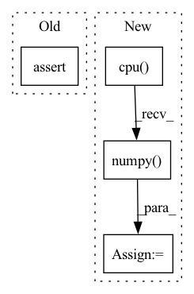

Pattern ID :26005
Before Change
elif n_dims != 3:
raise ValueError("mixture.dim() is expected 3 or 4, but given {}.".format(mixture.dim()))
assert estimated_sources_amplitude.dim() == 4, "estimated_sources_amplitude.dim() is expected 4, but given {}.".format(estimated_sources_amplitude.dim())
ratio = estimated_sources_amplitude / estimated_sources_amplitude.sum(dim=0)
estimated_sources = ratio * mixtureAfter Change
dtype = mixture.dtype
mixture = mixture.detach().cpu().numpy()
estimated_amplitude = estimated_amplitude.detach().cpu().numpy()
mixture = mixture.transpose(2, 1, 0)
estimated_amplitude = estimated_amplitude.transpose(3, 2, 1, 0)
estimated_sources = norbert.wiener(estimated_amplitude, mixture, eps=eps)In pattern: SUPERPATTERN
Frequency: 5
Non-data size: 4
Instances Fragment ID: 78510989
Project Name: tky823/dnn-based_source_separation
Commit Name: 11a2e82888f76547df72eff58c6a592e3473e65c
Time: 2021-08-20
Author: 40362510+tky823@users.noreply.github.com
File Name: egs/musdb18/d3net/src/adhoc_driver.py
M Class Name: AnonimousClass
N Class Name: AnonimousClass
M Method Name: apply_multichannel_wiener_filter(4)
N Method Name: apply_multichannel_wiener_filter(5)
M Parent Class:
N Parent Class:
M File Name: egs/musdb18/d3net/src/adhoc_driver.py
N File Name: egs/musdb18/d3net/src/adhoc_driver.py
M Start Line: 383
M End Line: 401
N Start Line: 397
N End Line: 413
Before Change
}
for j, m in self.js:
assert basis_g[j].shape == (self.dim_harmonic(j), S)
assert g_basis[j].shape == (self.dim_harmonic(j), S)
assert torch.allclose(g_basis[j], basis_g[j])
After Change
assert basis_g[j].shape == (1, 1, m, dim, S), (basis_g[j].shape, m, dim, S)
assert g_basis[j].shape == (1, 1, m, dim, S), (g_basis[j].shape, m, dim, S)
bg = basis_g[j].cpu().numpy()[0, 0, :, 0, :]
gb = g_basis[j].cpu().numpy() [0, 0, :, 0, :]
assert torch.allclose(g_basis[j], basis_g[j], atol=1e-6, rtol=1e-4)
Fragment ID: 78510991
Project Name: quva-lab/escnn
Commit Name: 435f18fe2f63fcc8eb4870fe6480d109f3f8ee6f
Time: 2022-08-28
Author: gabriele.cesa@gmail.com
File Name: escnn/kernels/steerable_filters_basis.py
M Class Name: SteerableFiltersBasis
N Class Name: SteerableFiltersBasis
M Method Name: check_equivariance(1)
N Method Name: check_equivariance(1)
M Parent Class: KernelBasis
N Parent Class: KernelBasis
M File Name: escnn/kernels/steerable_filters_basis.py
N File Name: escnn/kernels/steerable_filters_basis.py
M Start Line: 164
M End Line: 186
N Start Line: 164
N End Line: 188
Before Change
unit_count = u_c[1]
assert unit_type >= 0
// the unit_count can not be negetive number
assert unit_count >= 0
// the unit_type should not be more than the SFS.unit_counts_bow
// if it is, make it to be 0 now. (0 means nothing now)
After Change
def calculate_unit_counts_bow_numpy(obs):
ret = calculate_unit_counts_bow(obs)
ret = ret.detach().cpu().numpy()
return ret
Fragment ID: 78510990
Project Name: liuruoze/mini-alphastar
Commit Name: a115d8c35ded3fa3d608df5576d72a17cf941787
Time: 2021-12-10
Author: liuruoze@163.com
File Name: alphastarmini/lib/utils.py
M Class Name: AnonimousClass
N Class Name: AnonimousClass
M Method Name: calculate_unit_counts_bow_numpy(1)
N Method Name: calculate_unit_counts_bow_numpy(1)
M Parent Class:
N Parent Class:
M File Name: alphastarmini/lib/utils.py
N File Name: alphastarmini/lib/utils.py
M Start Line: 100
M End Line: 119
N Start Line: 98
N End Line: 100
Before Change
true_scores = interaction[self.label_field].to(pred_scores.device)
assert len(true_scores) == len(pred_scores)
return torch.stack((true_scores, pred_scores.detach()), dim=1)
def collect(self, batch_matrix_list, *args):After Change
dict: such as {"AUC": 0.83}
concat = torch.cat(batch_matrix_list, dim=0).cpu().numpy()
trues = concat[:, 0]
preds = concat[:, 1]
// get metrics
metric_dict = {}
result_list = self._calculate_metrics(trues, preds)
for metric, value in zip(self.metrics, result_list):
key = "{}".format(metric)
metric_dict[key] = round(value, 4) Fragment ID: 78511001
Project Name: rucaibox/recbole
Commit Name: df66b6285fec567d1f3ca0d6ee9d9ceb71f792b6
Time: 2020-10-20
Author: 1337990880@qq.com
File Name: recbole/evaluator/loss_evaluator.py
M Class Name: LossEvaluator
N Class Name: LossEvaluator
M Method Name: evaluate(2)
N Method Name: evaluate(3)
M Parent Class: AbstractEvaluator
N Parent Class: AbstractEvaluator
M File Name: recbole/evaluator/loss_evaluator.py
N File Name: recbole/evaluator/loss_evaluator.py
M Start Line: 49
M End Line: 51
N Start Line: 63
N End Line: 74
Before Change
j_output, jh = j_rnn(jt.float32(input), jt.float32(h0))
assert np.allclose(t_output.detach().numpy(), j_output.data, rtol=1e-03, atol=1e-06)
assert np.allclose(th.detach().numpy(), jh.data, rtol=1e-03, atol=1e-06)
def check_equal_2(t_rnn, j_rnn, input, h0, c0):After Change
else:
t_output, th = t_rnn(torch.from_numpy(input), torch.from_numpy(h0))
t_output = t_output.detach().cpu().numpy()
th = th.detach().cpu().numpy()
j_output, jh = j_rnn(jt.float32(input), jt.float32(h0))
j_output, jh = j_output.data, jh.data Fragment ID: 78510983
Project Name: jittor/jittor
Commit Name: 9ec300f2aafc68e8dc503866954a7293214ada85
Time: 2021-09-28
Author: lzhengning@gmail.com
File Name: python/jittor/test/test_rnn.py
M Class Name: AnonimousClass
N Class Name: AnonimousClass
M Method Name: check_equal_1(5)
N Method Name: check_equal_1(4)
M Parent Class:
N Parent Class:
M File Name: python/jittor/test/test_rnn.py
N File Name: python/jittor/test/test_rnn.py
M Start Line: 30
M End Line: 35
N Start Line: 25
N End Line: 40